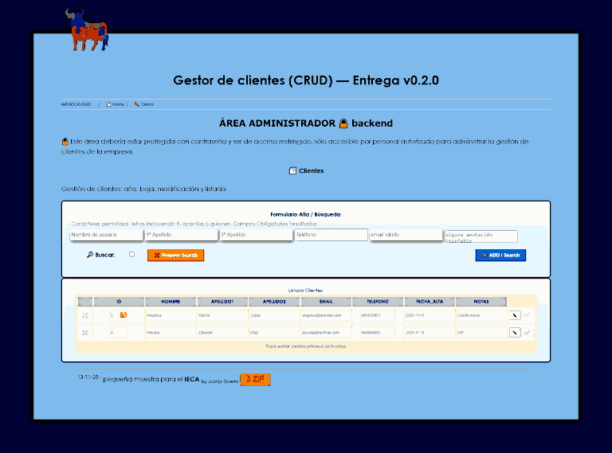

TOP
'PHP+MySQL' (PHP Web-APP) - App mínima para alta, baja, modificación y listado de clientes en MySQL.
Author: Juan José Guerra Haba - dinertron@gmail.com - Nov, 2025
Web: https://guerratron.kesug.com/
License: Free BSD. & Open GPL v.3. Keep credit, please.
Idea Original: Juan J. Guerra Haba
Versión: 0.3.0
Proyect: PHP+MySQL Javascript Package: WebAppCRUD.zip Main Class: clientes.php
🏠︎ Tabla de contenidos 🖇️
- 📖 Título y Descripción
- 🏷️ Requisitos
- 🗁 Estructura de Carpetas
- 📋 Características
- 🔧 Resumen De Uso
- ⚙️ Desarrollo
- 💥 Pruebas Unitarias
- ⌨️ Preview
- 🚀 Aviso
- ✨ Mejoras
- 🌍 Paquete
- 📄 License
- 🎁 Agradecimientos
- ✒️ Credits
📖-TITULO_y_DESCRIPCION
Gestor de clientes (CRUD) v0.3.0 by GuerraTron-25
Entrega v0.3.0 Aplicación mínima para alta, baja, modificación y listado de clientes en MySQL.
Esta mini-app o mini-portal-web se ha desarrollado a modo de muestra para las evaluaciones de certificación de profesionalidad de desarrollo de apps web del IECA. Se ha montado y probado tanto en LOCAL como en SERVER y funciona bien.
No se pretende programar un sitio completo, más bien un pequeño esbozo que muestre un poco la programación en HTML, CSS, Javascript, PHP Y SQL.
LADO CLIENTE:
Se trata de una web ficticia que tiene un formulario de gestión de clientes y donde puede verse un listado y realizar una serie de acciones.
También podrá visualizarse el resultado de cada acción de forma asíncrona con llamadas a través de AJAX.
LADO SERVIDOR:
PHP controla la parte de conexionado con la Base de Datos y sus consultas a través de acciones CRUD (Create-Remove-Update-Delete), para realizar las acciones solicitadas o retornar valores.
mostrar a través de diferentes páginas html una salida exitosa o no.
ATENCIÓN: 🔒 Esta página debería estar protegida con contraseña y ser de acceso restringido, sólo accesible por personal autorizado para administrar la gestión de clientes de la empresa
🏷️-REQUISITOS
- Opción A (PHP): PHP 8.x, Apache/Nginx, MySQL 8.x, extensión PDO.
- Un navegador compatible con estándares HTML5 (ej. Chrome, Firefox, ..) y motor javascript actual (ES6 es suficiente)
Instalación (4–6 pasos numerados)
Crear BD: mysql -u root -p < db.sql
NO ES NECESARIO, HE INCLUIDO EN PHP LA AUTO-GESTIÓN DE LA B.D.
Tan sólo habría que incluir las CLAVES correspondientes en el archivo src/bd_config.php- PHP: copiar src/ a tu servidor y apuntar el DocumentRoot a public/
- Abrir http://localhost:8080 (también la he probado en http://127.0.0.1:5500/public/) y probar.
- Interactuar con el formulario de Alta y consulta de clientes.
🗁-Estructura_De_Carpetas
Se ha separado la estructura en dos carpetas:
public/: Contiene todo el código que administra la parte cliente con archivos html, js y css.
También contiene otros archivos como un mínimo de imágenes.src/: Aquí va todo el código que administra el servidor, controla los verbos CRUD para la base
de datos y algún archivo de utilidad. Todo son archivos phptest: Esta carpeta no cuenta, es sólo para uso interno, no es necesaria en el lanzamiento. Aquí residen los test de pruebas unitarias realizados con jasminedocs: documentación de la API
Control_de_Versiones
Tag (etiquetas de version) y release notes (notas de versión):
Se ha utilizado Git para crear el repositorio y llevar el control y numeración de versiones utilizando los siguientes comandos:
- crear "git init" | clonar "git clone" repositorio (yo lo he hospedado en GitHub, por lo tanto lo he clonado vacío)
git clone https://github.com/guerratron/AppWeb-CRUD.git - crear una etiqueta anotada inicial
git tag -a v0.1.0 -m "Inicio de la primera version de la app-web con CRUD" - subir la etiqueta al repositorio remoto
git push origin v0.1.0ó todas las etiquetasgit push origin --tags - a partir de aquí se ha seguido trabajando con GitHub-Desktop conjuntamente con Git, creado otras tags en otra rama (ESTRUCTURA-II).
- Finalmente el proyecto acabado se ha fusionado en la rama master en su versión v0.3.0 que puede visualizarse online en:
https://github.com/guerratron/AppWeb-CRUDasí como las distintas tags y se puede descargar el tarball de su Release
Modelo de release notes (Un resumen breve (4 ó 5 líneas) de qué incluye esa versión y cómo afecta al despliegue):
v0.3.0
- CRUD+ ampliado de clientes (crear, listar con búsqueda, modificar, borrar).
- Validación de email y control de duplicados.
- Script db.sql con datos de ejemplo. (No necesario, lo auto-gestiona php)
- README de instalación y api.md con ejemplos.
- DEMO en vivo en https://
📋-CARACTERISTICAS:
- Se han insertado comentarios a lo largo de todo el código explicando su funcionalidad, también se ha documentado las funciones utilizadas para explicar su uso, e incluso se ha creado este README y el api.md. También se ha incluido documentación en la carpeta
docs - Se han respetado los estándares
HTML5 - Se han filtrado por seguridad los datos introducidos por el formulario en 3 capas distintas:
HTML, Javascript y PHP - Se le ha dotado de un mínimo
CSSpara hacerla más amigable, responsive con mediaquery - Se han utilizado etiquetas semánticas en el HTML
- Se ha incluido componentes comunes en HTML como el "Breadcrumbs" o el "pié de página"
- Se han utilizado distintos
eventos javascriptpara controlar el formulario. - Se ha intentado separar la lógica de la presentación.
- Se ha utilizado MySQL para crear y guardar los datos de los registros.
- Se han tratado de forma segura los datos sensibles de acceso a la base de datos, separándolos en directorios protegidos por un
.htaccess. - Preparado para LOCAL y ONLINE
- Añadido un botón de descargas que bajará el proyecto completo en zip
- Algún trabajo extra adicional como la optimización de las pocas imágenes que implementa, creación de un zip con el proyecto al completo.
- Se han realizado tests unitarios con jasmine pasando con
OK 51 Spec - Unos
52 Kbtsde código enpublic/y18 Kbtsensrc/sin contar test, README ni imágenes. - Por último todos los archivos de texto se han guardado con codificación estándar
UTF-8 no-BOM.
🔧-ResumenDeUso
El archivo de entrada index.html muestra una pseudo-web que rerpresenta la parte administrativa de una supuesta empresa, donde se muestran dos formularios:
- Uno para dar de Alta y búsqueda de clientes.
- Otro que muestra el Listado (con botones de accción) de los clientes previamente registrados.
Al dar de alta algún cliente (rellenando los campos obligatorios) se refrescará el listado de forma automática.
Este formulario permite también la búsqueda por nombre, apellidos e email marcando el checkbox correspondiente. Los resultados se mostrarán en el listado, para volver a visualizarlos todos pulsar el botón de Limpiar Búsqueda.
Todos los campos obligatorios se les pasa un control de validación para evitar datos introducidos de forma errónea (por ejemplo nombres con números o email no válidos) a través de javascript, aún así, en la parte servidor se vuelve a verificar la corrección de los datos con php.
Tanto si las acciones se cumplen satisfactoriamente o no, se mostrará un pequeño mensaje en el pié del formulario.
⚙️-Desarrollo
No he podido dedicarle más que unas cuantas horas en estos 5 días por problemas familiares, así que no se podían hacer grandes cosas, pero he intentado cumplir lo solicitado en el PDF y que haya una muestra variada sobre programación de tecnologías web, tanto en local (con WamppServer) como en servidor, aplicando buenas prácticas de programación.
La monté en local y tras sucesivos tests prueba-error me decidí a montarla también online.
Para esto contraté un hosting en "infinityFree" y subí los mismos archivos que en local, sólo tube que realizar modificaciones en los datos de conexionado a la BD y algún pequeño ajuste más.
Puede verse montada a modo de prueba en: https://appcrud.kesug.com/
DOCUMENTACION
Como se ha comentado anteriormente por encima todos los scripts tanto en html, css, javascript como en php tienen líneas de comontario explicando su funcionalidad, también se ha creado este README y el api.md. Como colofón final también se ha incluido documentación en la carpeta docs, esta documentación sobre los archivos php se ha incluido en la ruta: /docs/api/index.html la cual se ha generado con phpDocumentor 3.8.1.
💥-PruebasUnitarias
Ejecutadas pruebas unitarias con jasmine al código js a través del archivo tests/jasmine/SpecRunner_validation.js.html. Este script lo he preparado específicamente para este proyecto y
verifica multitud de variaciones de entradas a los campos del formulario, tanto a "Nombre", como a
"Apellidos" y también a "Email".

Se han probado 51 casos de uso y todas las pruebas han resultado satisfactorias: 51 specs, 0 failures.
⌨️-Preview

🚀-Aviso
Esto sólo es una pequeña demostración, no una app real.
✨-Mejoras
Podrían añadirse muchas mejoras, añadir más bloques de contenido, insertar etiquetas semánticas, hacerla responsive, mejorar el estilo y la maquetación, aplicar efectos CSS3, ...
🌍-Paquete
He creado un paquete comprimido en formato ZIP con todo el proyecto, esto puede implementarse tanto en LOCAL como en SERVER, pero hay que detenerse en el archivo bd_config.php y establecer los datos correctos de conexionado con la Base de Datos.
Para este proyecto a mí me han servido los datos que están registrados en ese archivo, pero al trasladar el proyecto a otros PC / SERVERs habría que modificarlos.
También se ha insertado en la propia web (en el pié de la página principal) un botón de descarga del proyecto en su totalidad.
🎁-Agradecimientos:
... Muchas gracias a todos los que hacen código libre por desarrollar herramientas superútiles para todos; esta vez también a Microsoft por su VSC que me ha facilitado y acelerado el trabajo del desarrollo en local, .. y en general a todo el mundo altruista que genera código y lo dispone open-source.
Por supuesto muchísimas gracias también a los asesores que he tenido durante la etapa de Asesoramiento en las Certificaciones que me han ayudado y aconsejado, y con antelación, también a mis futuros Examinadores por su interés en contactarme y facilitarme la presentación y exposición de mis trabajos y experiencia laboral.
✒️-Credits:
2025 - GuerraTron-25 ® GuerraTron Github
⌨️ con ❤️ por Juan José Guerra 😊